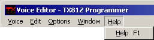

Performance Editor Menus
Performance Menu

This menu allows you to do some operations that affect the unit and snapshot,
or one of the open libraries.
Retrieve Performance
This retrieves the performance edit buffer from the unit and updates the
performance editor and the snapshot.
Transmit Performance
This sends the contents of the performance editor to the unit.
Store Performance
This brings up the store performance dialog so you can store the performance
in the performance memory bank of the unit.

Just select the location where you want the performance to be stored and click
OK. The program will transmit a series of remote control messages to store
the performance edit buffer in the memory number you select.
Warning
The program change table will be updated before the performance is stored.
This is necessary to make sure that the editor is storing the performance in
the right place.
|
Warning
You'll want to be careful with this function because if the performance edit
buffer in the unit and the PCED of the editor's snapshot are not properly
synchronized then you could end up storing a performance that's different from
the performance you are looking at in the editor. You could also overwrite a
patch that you didn't intend to overwrite if the memory banks aren't
synchronized, so be careful. It's a good idea to save all of your important
patches in a library so they can be recovered if they accidentally get wiped
out on the unit.
|
Initialize Performance
This will initialize the performance edit buffer on the unit to one of the five
standard init types and update editor's snapshot and performance editor.
Add To Library 1
Add To Library 2
These will add the performance to one of the libraries that are currently open
in the main window.
Bundle To Library 1
Bundle To Library 2
These will create a performance bundle and add it to one of the libraries that
are currently open in the main window. See Performance
Bundles for more information on bundles.
Close Editor
This closes the performance editor window.
Exit Program
This quits the entire program.
Edit Menu

Undo
This undoes all the edits made to the performance since the changed the input
focus. In other words, if you click on a slider and make multiple changes,
when you click undo, it will set the control back to the value it had when
you first clicked on it.
You can also undo copying and swapping by LCD dragging and dropping.
You can also undo the copying or swapping of performance instruments.
What you can't undo is things that happen to the entire performance. This
includes retrieving, initializing, storing and transmitting the performance.
The entire undo list is cleared and the menu item is grayed out when any of
these things happen. Also, if you do something to the performance in the main
window, this is also undoable and it will clear the undo list in the
performance editor.
Redo
This is the opposite of undo. Just read the last section backwards :-)
Window Menu

MIDI Keyboard Control, Remote Control, Main Window, etc.
The options in this menu will open a different program window. The windows
are covered in their own sections:
Help Menu

Help
Brings up the voice editor section of the manual.